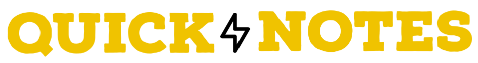

Around UMass using DGL
Coded using Python, Django, Torch and Deep Graph Learning libraries. An interactive navigator for my college, UMass Amherst, using tensor graphs and deep graph learning techniques.
Shows the nearby buildings to a specific building and also the shortest distance (along with magnitude and duration of travel) between any two buildings.
Simple To-Do CLI
Coded using Python, Click & SQLite. A simple command line interface, integrated with password authentication, that lets users register/create/delete to-do tasks..
Offers features such as logging in, registering/viewing users, adding/viewing todo's, etc.
Battleship Ai
Coded using HTML, CSS and JavaScript. Recreation of the famous board game: 'Battleship'! An Ai controlled Battleship experience. Players compete against an autonomous Ai opponent which plays randomly, yet strategically. Includes features such as AI controlled opponent, automatic placement of ships, auto scroll-lock, auto control-lock and more!
I am soon to add mobile compatibility. I also plan to redesign the gameboard and allow manual placement of ships.
Pac-Man
Coded using HTML, CSS and JavaScript. Recreation of the famous arcade game: 'Pac-Man'! Players can compete by trying to collect all the coins as fast as possible using the arrow keys. What more?! Try to avoid the ghost and collect as many coins as possible! Includes features such as AI controlled ghost, pro-mode, timer, automatic scroll-lock, scoreboard and much more!
I am soon to make the game functional on mobile as well. I also plan to make the game board bigger and add more difficulty levels.
CovImune
Coded using HTML, CSS and JavaScript. CovImune is an all-in-one medical dashboard to analyse, store, remind and share medical data among all hospitals. With CovImune, every person can store all their medical records in one place, and subsequently share them with hospitals. It also has the added benefit of in-built analysers with alert and reminder facility. My project can redefine medical care and streamline the workflow in hospitals.
I am soon to add more in-built analysers/predictors, and make the alerts & reminders functional.
Space Odyssey
This game is coded in C and is based on the famous board game called ‘Clue’. This is a complex text adventure games set in a virtual 3x3 map, where I set up all objects randomly. The player can move around and do a variety of stuff like picking up items or dropping them, searching up other commands, looking around, etc. with specific commands. One of the items, character and room will have to be guessed by the player so as to win the game.
Main concepts used in this project include C structs, pointers, dynamic allocation with malloc/calloc, free'ing, and data structures and algorithms
Santorini
This game is coded in C and is based on the famous board game ‘Santorini’. It consists of a 3x3 board in which we are allowed to move around the board as a player (and build levels) by entering the coordinates. I have also designed an AI in the game, which decides its position automatically based on the player’s input.
Main concepts used in this project include basic data types, looping and conditional constructs, arrays, iteration, basic I/O, formatted output, and functions.
WordFreak
A simple yet, interactive project which can be used for a plethora of applications. The code is in C and is designed in such a way that it can take file input in any form, i.e, command-line arguments, environment variable or stdin/piping, and then it reads it, splits it [based on alpha characters], sorts it alphabetically, and then writes it to a new file along with the frequencies of each word.
Main concepts used in this project include File I/O, environment variables, file descriptors, formatted I/O, argv & argc, pointers, structs, and data structures and algorithms.
Presidential Debate
A program coded in C. It uses threads to simulate a debate, wherein callers will be queued automatically and simultaneously received by an operator, to enact the act of debate. This project can be used as a software to streamline the flow of calls in call centres, etc.
Main concepts used in this project include threads, binary & counting semaphores, synchronization and pointers.
Word Analyser
Coded from scratch using Java. This code is a customisable keyword locater. It allows a user to evaluate a document faster.
By noting down certain keywords, the program allows us to find sentences around, and including, the keywords mentioned by the user. Try it out by following the instructions on the GitHub repository.

My first legally registered start-up, in India! We at QuickNotes focus on solving the common problems faced in the society such as lack of quality education. One way in which we do this is by enabling students to either upload their notes for free or purchase them at an extremely minimal cost of just 27 cents.
Our services [website still in production] will be released to the public by the end of September, 2021. We have a solid revenue model which allows QuickNotes to earn more than $220,000 in India alone, which converts to $990,000 in the US [according to Purchase Power Parity]. We have also hired students under our 'Quinternship' campaign. Moreover, we believe that every child needs to get access to education, hence we are also actively creating a business model to collaborate with NGO's and donate towards education for the unprivileged.